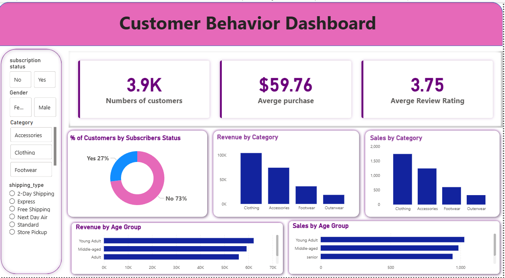
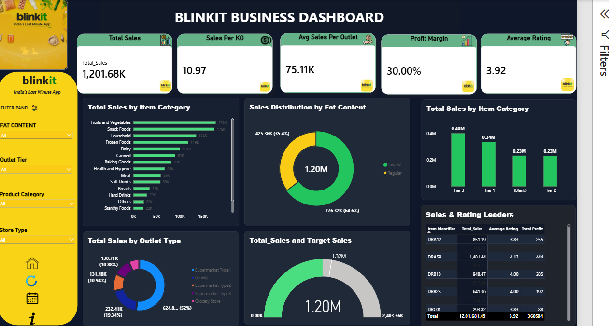

Programming & data
Working with data, writing queries, and automating analysis.
OPEN TO DATA ANALYST OPPORTUNITIES
I'm Samarth — an aspiring Data Analyst who enjoys finding the story behind the numbers and turning it into clear, useful business insights.
CURIOUS BY NATURE. ANALYTICAL BY APPROACH.
01 / A LITTLE ABOUT ME
I’m building my career at the intersection of data, technology, and business problem-solving.
I have a foundation in Data Science and hands-on experience working with Python, SQL, Excel, and Power BI. Through practical projects, I’ve explored customer behaviour, marketing performance, sales trends, and hospitality operations — from cleaning raw datasets to presenting findings through dashboards and analysis.
I value clear thinking, continuous learning, and communicating insights in a way that helps people make better decisions. I am also expanding my knowledge of data engineering concepts and the Databricks lakehouse ecosystem, including ETL/ELT workflows and data pipelines.
02 / MY TOOLKIT
Tools I use to explore data, uncover patterns, and communicate findings.
Working with data, writing queries, and automating analysis.
Preparing datasets and investigating patterns with analytical methods.
Building visual reports that make performance easier to understand.
Developing foundational knowledge of modern data platforms and data pipeline concepts.
Organising, developing, and sharing analytical work.
03 / SELECTED WORK
A selection of practical work where I applied data tools to answer business questions.

POWER BI / CUSTOMER INSIGHTSAn end-to-end analytics project focused on understanding customer behaviour and presenting key metrics through an interactive dashboard.
View on GitHub ↗Analysed 45,211 customer records, investigated data quality, and explored factors associated with term-deposit subscriptions.

POWER BI / BUSINESS INTELLIGENCEBuilt an interactive dashboard to analyse sales, product categories, outlet performance, and customer ratings using Power Query and DAX.
Designed a six-table relational database and analysed 2,800 bookings, 3,200 stays, revenue, booking channels, cancellations, and no-shows.
04 / THE FOUNDATION
Building a strong base through formal education and focused technical training.
Dr. Babasaheb Ambedkar Technological University · Lonere, Maharashtra
CGPA: 8.2 / 10Innomatics Research Labs · Python, SQL, Power BI, EDA, statistics, and analytics projects
CERTIFICATIONS & TRAINING
05 / HAVE A QUESTION OR OPPORTUNITY?
I’m interested in entry-level Data Analyst opportunities, collaborative projects, and connecting with people in the data community.
Get in touch ↗